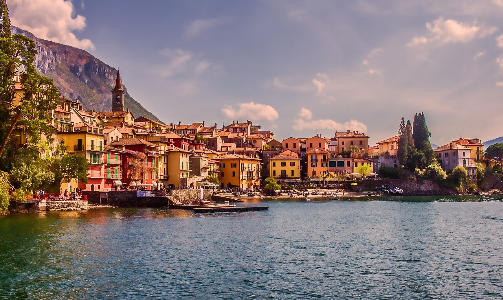
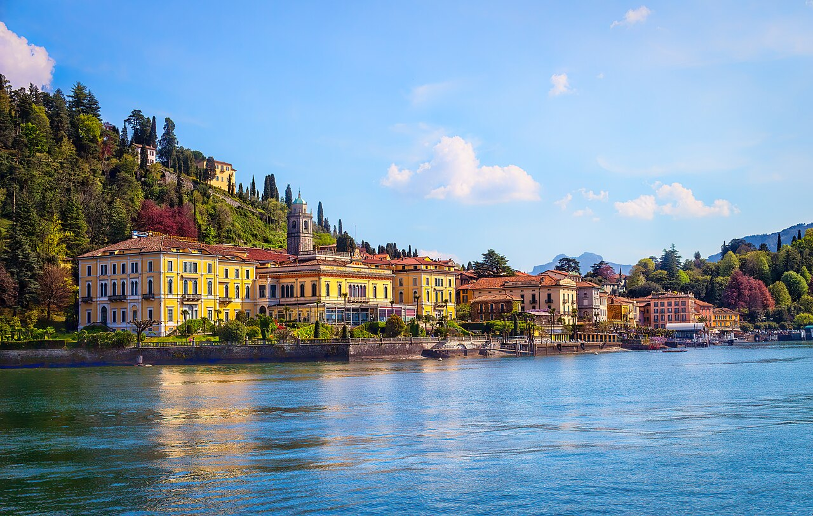
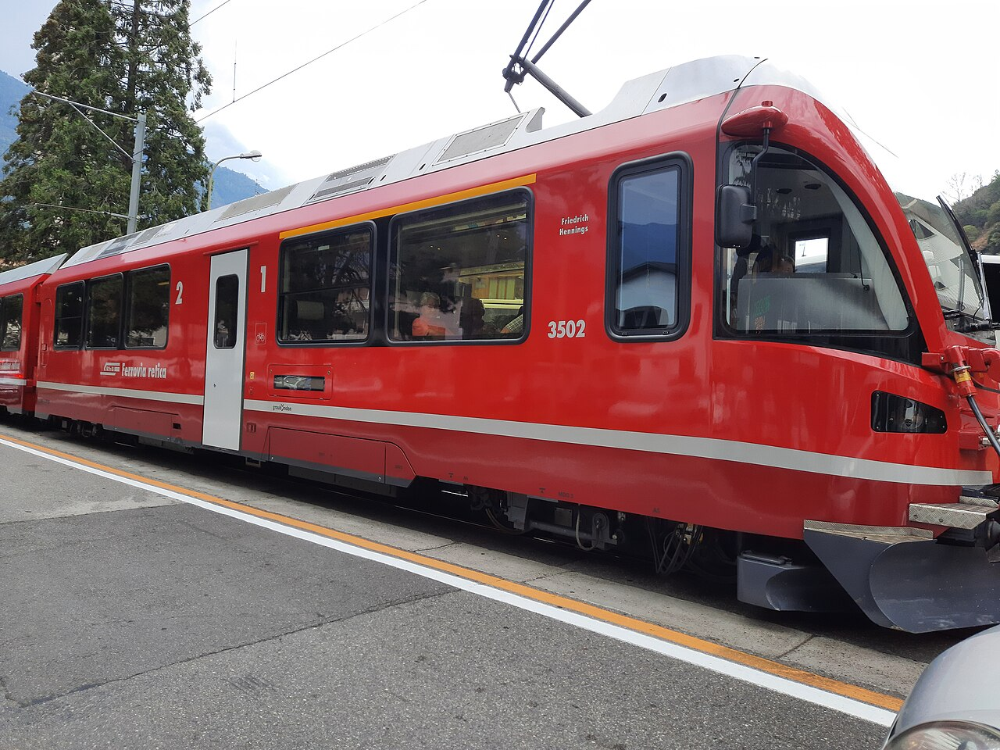
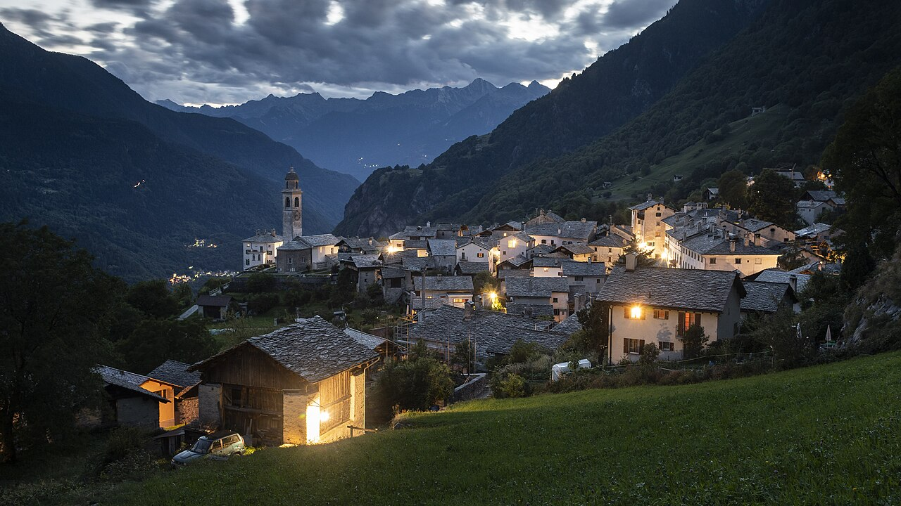
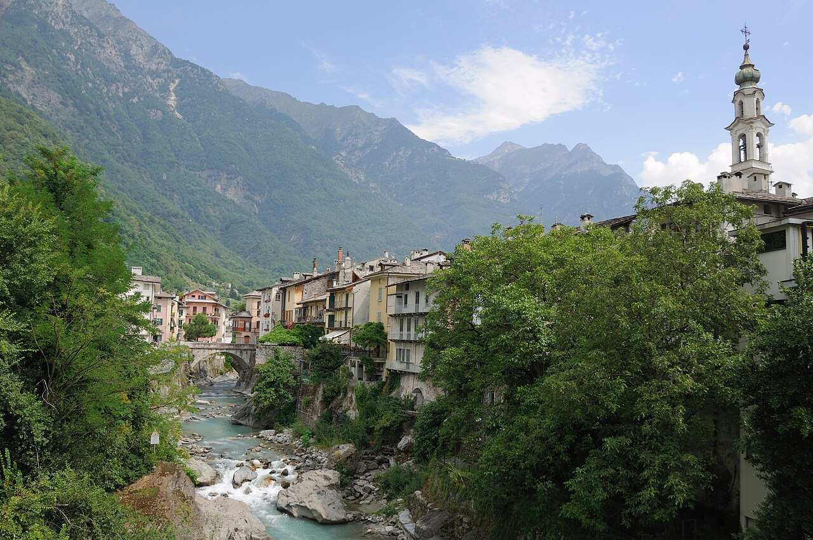
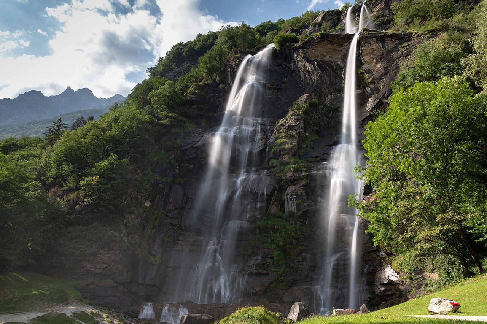

May
GreatGardens in bloom (azaleas), mild and calm.
per person≈ €1 390–2 270

Swiss mountains, Italian lakes and prices: ride the Bernina Express from Tirano, sleep cheaper on Lake Como and in Chiavenna, and visit Soglio, 'the threshold of paradise'.
Lakes are lovely from May. For Bernina lifts (Muottas Muragl, Diavolezza) go after ~6–20 June. Avoid August.
July–August adds ≈ €190–330 per person here (+14 %), mostly for beds. Passes, food and most lift tickets cost the same all summer.
Gardens in bloom (azaleas), mild and calm.
Warm, long evenings, before peak prices.
Hot and crowded on Lake Como, with prices near their peak.
Ferragosto: Lake Como is at its fullest and most expensive. Avoid.
Keep 1–2 days flexible and save the big mountain days for clear weather.
Langenfeld → Basel → Gotthard Base Tunnel → Lugano (≈ 7.5 h). Lakeside walk in Parco Ciani.
Monte Brè → olive trail to Gandria → boat back. Evening on Monte San Salvatore.
Bus via Porlezza to Menaggio (≈ 1 h), ferry to Varenna. Castello di Vezio at sunset.
Bellagio, Villa Carlotta's gardens (Tremezzo), Villa del Balbianello (Star Wars and Bond).
Hike the Sentiero del Viandante Varenna → Bellano (≈ 2.5 h) and the Orrido di Bellano gorge. Swim at a lido.
Train Varenna → Tirano (≈ 1.5 h, cheap Italian fare), then the Bernina line over the Brusio spiral viaduct, Alp Grüm and Lago Bianco → Pontresina.
Morteratsch glacier walk, Muottas Muragl panorama or Diavolezza, and the Lej da Staz forest lake.
PostBus down the Maloja hairpins → Soglio (chestnut forest trail to Castasegna) → Chiavenna, Italy.
Acquafraggia twin waterfalls, Lake Mezzola, and dinner in a crotto (natural cave cellar tavern).
Train to Colico, then a slow ferry the whole length of the lake to Como (≈ 4 h), and the train to Lugano (≈ 30 min).
Lugano → Zürich → Köln (≈ 7.5 h).





With 5 people, a holiday apartment with a kitchen is almost always cheapest. Book with free cancellation now and re-check prices later.
Apartments for 5 in Bellano/Dervio/Colico are much cheaper than Varenna or Bellagio. Agriturismi around Chiavenna.
≈ €40–55 pp/nightPick a Pontresina hotel with 'lifts included'.
≈ €70–95 pp/nightOr simply an aperitivo on a grand-hotel terrace.
≈ €200+ ppLangenfeld → Köln → Basel → Lugano via the Gotthard Base Tunnel (≈ 7.5 h). Ticket: DB Sparpreis Europa to Lugano, or DB to Basel + an SBB Saver Day Pass.
No pass. Italian trains and ferries are cheap (Varenna → Tirano ≈ €8). The Swiss legs (Bernina, PostBus, Lugano) ≈ CHF 120–180, and half that with a Half Fare Card if you add more Swiss days.
CHF per person for the whole trip in May–June, sharing everything between 5. 'Budget' = hostels/campsites and cooking. 'Comfort' = apartments/3★ hotels and more meals out.
| Item | Budget | Comfort |
|---|---|---|
| Train Langenfeld ⇄ Lugano | 100 | 150 |
| Trains, ferries & buses (CH + IT) | 220 | 250 |
| Villas, lifts & entries | 80 | 160 |
| Accommodation (10 nights) | 450 | 800 |
| Food (Italy is cheaper) | 385 | 660 |
| Buffer | 60 | 100 |
| Total (CHF) | 1 295 | 2 120 |
€ at 1 CHF ≈ €1.07. 2026 prices; Swiss fares rise ≈ 3–4 % from Dec 2026. Splurges are listed separately.
Today is late October 2026. See the overview page for the full timeline.